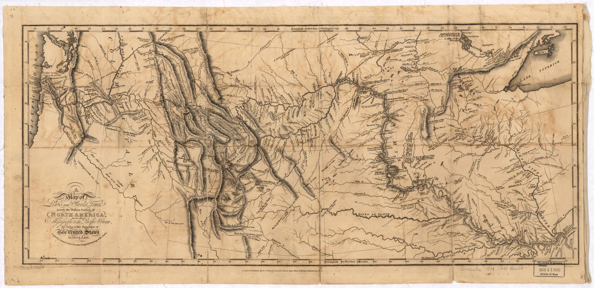
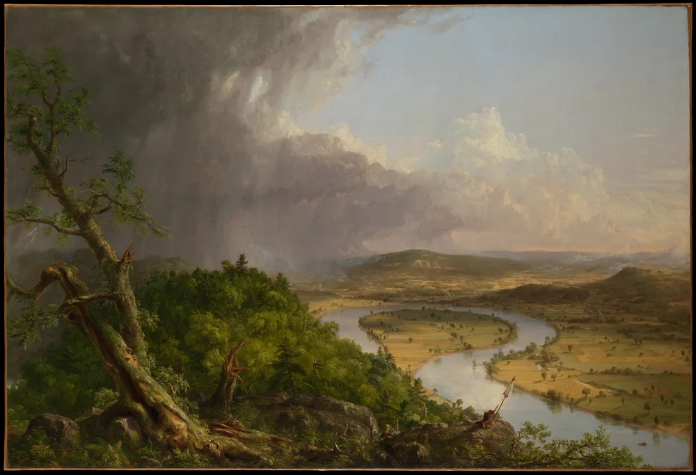

American History · Chapter lesson
Expansion, exploration, and displacement
Read a short illustrated account, examine primary sources, and discuss the evidence.
1800–1860
Expansion, exploration, and displacement
The Louisiana Purchase in 1803 greatly expanded U.S. claims in North America. Lewis and Clark’s expedition of 1804–1806 relied on Native knowledge, diplomacy, and trade, including Sacagawea’s contributions. Expansion also brought forced removal of Indigenous peoples, including the Trail of Tears, and intensified conflict over the spread of slavery.
Discuss: What can a map reveal—and what can it leave out?
National Park Service: Trail of Tears →
